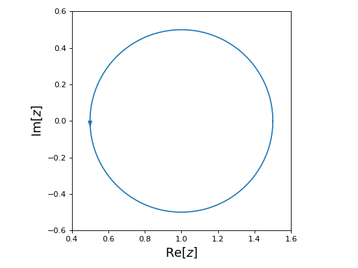
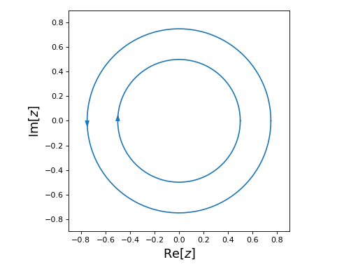
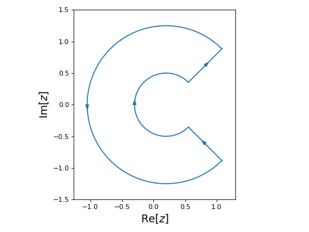

Contours¶
cxroots finds all the roots an analytic function which lie in the interior of a user specified contour. The posibilities for choosing this contour are:
Contours can be plotted using:
-
Contour.show(saveFile=None, *args, **kwargs)[source]¶ Shows the contour as a 2D plot in the complex plane.
Parameters: saveFile (str (optional)) – If given then the plot will be saved to disk with name ‘saveFile’ instead of being shown.
Circle¶
-
class
cxroots.Circle(center, radius)[source]¶ A positively oriented circle in the complex plane.
Parameters: - center (complex) – The center of the circle.
- radius (float) – The radius of the circle.
from cxroots import Circle
center = 1
radius = 0.5
circle = Circle(center, radius)
circle.show()
(Source code, png, hires.png, pdf)
{kind=link}
{kind=link}

Rectangle¶
-
class
cxroots.Rectangle(xRange, yRange)[source]¶ A positively oriented rectangle in the complex plane.
Parameters: - xRange (list) – List of length 2 giving the range of the rectangle along the real axis.
- yRange (list) – List of length 2 giving the range of the rectangle along the imaginary axis.
from cxroots import Rectangle
xRange = [-2, 2]
yRange = [-1, 1]
rect = Rectangle(xRange, yRange)
rect.show()
(Source code, png, hires.png, pdf)
{kind=link}
{kind=link}

Annulus¶
-
class
cxroots.Annulus(center, radii)[source]¶ An annulus in the complex plane with the outer circle positively oriented and the inner circle negatively oriented.
Parameters: - center (complex) – The center of the annulus in the complex plane.
- radii (list) – A list of length two of the form [inner_radius, outer_radius]
from cxroots import Annulus
center = 0
radii = [0.5,0.75]
annulus = Annulus(center, radii)
annulus.show()
(Source code, png, hires.png, pdf)
{kind=link}
{kind=link}

Annulus Sector¶
-
class
cxroots.AnnulusSector(center, rRange, phiRange)[source]¶ A sector of an annulus in the complex plane.
Parameters: - center (complex) – The center of the annulus sector.
- rRange (list) – List of length two of the form [inner_radius, outer_radius]
- phiRange (list) – List of length two of the form [phi0, phi1]. The segment of the contour containing inner and outer circular arcs will be joined, counter clockwise from phi0 to phi1.
from numpy import pi
from cxroots import AnnulusSector
center = 0.2
r = [0.5, 1.25]
phi = [-pi/4, pi/4]
annulusSector = AnnulusSector(center, r, phi)
annulusSector.show()
(Source code, png, hires.png, pdf)
{kind=link}
{kind=link}

from numpy import pi
from cxroots import AnnulusSector
center = 0.2
r = [0.5, 1.25]
phi = [pi/4, -pi/4]
annulusSector = AnnulusSector(center, r, phi)
annulusSector.show()
(Source code, png, hires.png, pdf)
{kind=link}
{kind=link}
